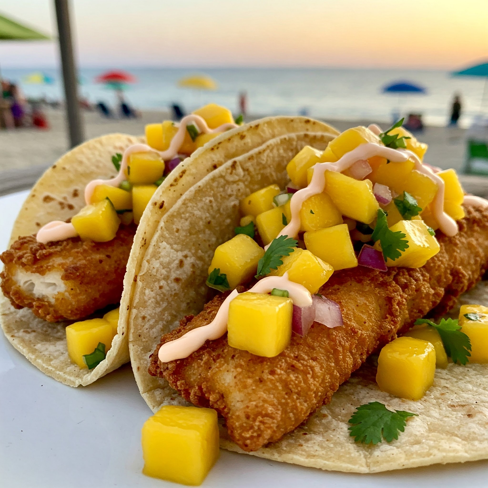

Fish Tacos with Mango Salsa
Ingredients
- 200g white fish fillets (tilapia, basa, or cod)
- 1/2 tsp chilli powder
- 1/4 tsp cumin powder
- 1/4 tsp garlic powder
- Salt and pepper to taste
- 1 tbsp oil
- 4 small tortillas
- 1/2 cup shredded cabbage or lettuce
- 1 ripe mango (diced)
- 1/4 onion (finely chopped)
- 1 green chilli or jalapeño (chopped)
- 1 tbsp lemon or lime juice
- Fresh coriander leaves (chopped)
- Salt to taste
For Mango Salsa
Steps
- Season fish with chilli powder, cumin, garlic powder, salt, and pepper.
- Heat oil in a pan and cook the fish on medium heat for 3–4 minutes per side until done. Flake it gently.
- In a bowl, mix mango, onion, chilli, lemon juice, coriander, and salt to make salsa.
- Warm tortillas lightly.
- Place cabbage or lettuce on each tortilla, add flaked fish, and top with mango salsa.
- Serve immediately with a squeeze of lime!